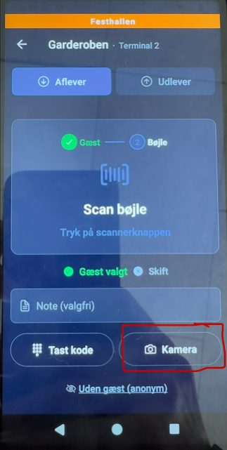
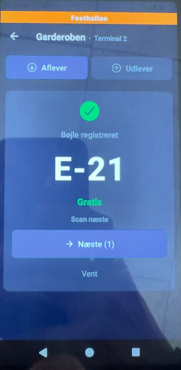
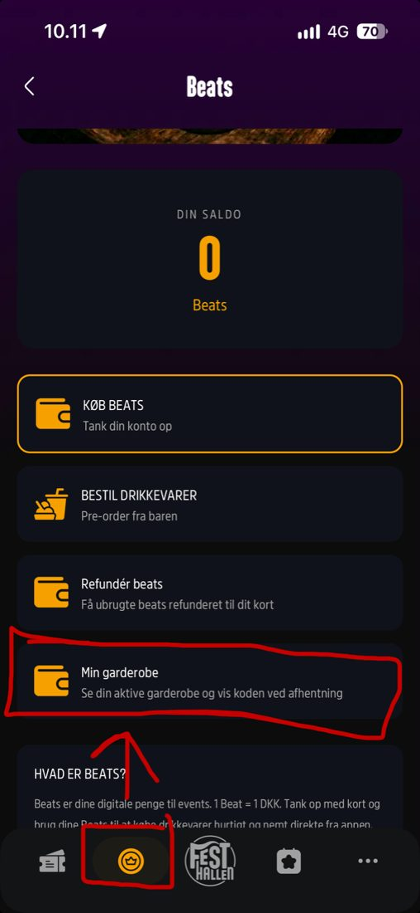

Terminalerne: opsætning og fejlfinding
Til dig, der står i baren, i garderoben eller ved indgangen. Find dit afsnit, og følg trinene. Knapperne står, som de hedder på skærmen, fx Betal.
Login til terminalerne
Udfyldes af lederen på dagen.
Billetscanning: scan gatens QR-kode i RF Scanner.
Kom i gangHvilken app skal du bruge
Baren eller garderoben

- Indtast eventets brugernavn og adgangskode. Brugernavnet kan være en e-mail.
- Du bliver normalt ved med at være logget ind. Bliver du logget ud, logger du bare ind igen.
Billetscanning ved indgangen

- Åbn RF Scanner, og scan gatens QR-kode.
- Terminalen er nu klar til at scanne gæsternes billetter.
Kun baren og garderobenVælg kasse
- Åbn Festhallen POS, og log ind.
- Vælg den kasse (terminal), du står ved, hvis eventet beder om det.
- Valget bliver gemt automatisk.
Kun lederen kan skifte kasse. Det sker under Indstillinger og Terminal.


Kun billetscanningRød skærm ved scanning
Giver scanningen en rød skærm med en fejl, sender du gæsten til informationen. Du skal ikke selv vurdere, om gæsten må komme ind.


Terminalen kan ikke brugesKritiske fejl
Terminalen er død
- Tag batteriet ud på bagsiden, og sæt det i igen.
- Tænd terminalen med tænd/sluk-knappen i toppen.
- Er den stadig død, så byt den med en terminal fra reservepuljen i informationen.

Terminalen har mistet internetforbindelsen
Luk appen med cirklen nederst på skærmen, og åbn den igen. Hjælper det ikke:
- Tryk på cirklen nederst, og vælg Esper-indstillinger.
- Vælg Trådløst internet. Slå Brug Wi-Fi fra og til igen.
- Tjek, at terminalen får forbindelse til Wi-Fi.
- Hjælper det ikke, så slå mobildata til.
- Er forbindelsen stadig ustabil, så byt terminalen i informationen.

Terminalen virker, men noget drillerMindre fejl
"Ukendt gæst"

- Prøv én gang mere.
- Tjek, at gæsten er inde i Festhallen-appen og ikke i Ringsted Festival-appen.
- Kontakt lederen, eller send gæsten til informationen.
Kortet bliver afvist ved optankning
Varer betales altid med Beats.
- Prøv én gang mere.
- Virker det ikke, skal gæsten tanke op i sin egen app eller bruge et andet kort.
- Prøv ikke igen og igen. Så kan gæsten blive trukket to gange. Send gæsten i stedet til informationen.
Gæsten mangler Beats
- Bed gæsten om at tanke op i sin egen app med kort, Apple Pay, Google Pay eller MobilePay.
- Kun hvis gæsten ikke kan, hjælper du med optankning på terminalen og betaler varen med Beats. Du kan også sende gæsten til informationen.
"Noget gik galt. Prøv igen."
- Prøv igen, højst tre gange.
- Kontakt derefter lederen, eller send gæsten til informationen.
BarenBetaling

Beats fra appen
- Indtast ordren.
- Ret eventuelt ordren med pilen op (^).
- Tryk på Betal.
- Vælg QR.
- Scan QR-koden i gæstens app. Betalingen gennemføres.
Beats fra armbånd
- Indtast ordren.
- Ret eventuelt ordren med pilen op (^).
- Tryk på Betal.
- Vælg NFC.
- Scan gæstens armbånd. Betalingen gennemføres.
Betalingskort
- Indtast ordren.
- Ret eventuelt ordren med pilen op (^).
- Tryk på Betal.
- Vælg NFC.
- Gæsten holder sit betalingskort mod terminalen. Betalingen gennemføres.
BarenOptankning af Beats

- Scan gæstens armbånd eller QR-kode.
- Tjek sammen med gæsten, at den rigtige konto vises.
- Tryk på den gule knap Optankning.
- Vælg beløb, og tryk på Tap to Pay.
- Gæsten betaler med sit betalingskort.
- Tjek, at det rigtige beløb er lagt til Beats-saldoen under gæstens navn.
BarenRefundering og ordreopslag Kun leder
- Bed gæsten om at vente, og kontakt lederen.
- Scan gæstens armbånd eller QR-kode.
- Tryk på den blå knap Ordre.
- Tryk på Refundér ved den ordre, der skal refunderes.
- Indtast PIN-koden. Ordren bliver refunderet.
Har gæsten spørgsmål, sender du gæsten til informationen.
GarderobenModtag og udlever tøj
Modtag tøj
- Tryk på T-shirten i øverste højre hjørne, og scan gæstens QR-kode.


- Scan bøjlens QR-kode.


- Tjek, at gæsten har fået den rigtige bøjle i appen.


Har gæsten glemt sit nummer, står det i appen under Min garderobe.
Kan QR-koden ikke scannes?
Kan du ikke scanne QR-koden i gæstens app, kan du slå gæsten op på telefonnummer, e-mail eller navn.
Udlever tøj
- Tryk på T-shirten i øverste højre hjørne, og vælg Udlever.
- Scan gæstens QR-kode.
- Find bøjlen.
- Når tøjet er udleveret, trykker du på Udleveret.
Ved tvivl: stop, og kontakt din leder.